Write your name & answers on a sheet of paper.
Let \(f(x) = x^3-6\). Find \(x\) that makes \(f(x)=2\).
Is \(2\) the input or output? Output!
That means we replace “\(f(x)\)” with the definition “\(x^3+6\)”, and then solve for \(x\).
\(x^3-6 = 2\)
\(x^3 = 8\)
\(\sqrt[3]{x^3} = \sqrt[3]{8}\)
\(x = 2\)
How do you write \( g\Big(f \big(k(x)\big)\Big) \) using composition notation (\(\circ\))?
\( (g \circ f \circ k)(x) \)
Functions are machines.
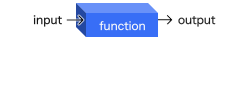
An inverse function is a machine that UNDOES a function.
Functions are machines.
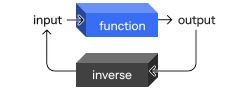
An inverse function is a machine that UNDOES another function. They cancel each other out.
Let’s think about putting on socks and shoes. If I want to undo that, what do I do?
Take off shoes, then take off socks.
Notice that we do the opposite actions in REVERSE order!!
Now let’s think about \(x^2\). If I want to undo that (to get back to \(x\)), what do I do?
Take the square root.
\(\sqrt{?}\)
How about \(x^2+4\). If I want to undo that (to get back to \(x\)), what do I do?
Remember, we do the opposite actions in REVERSE order!!
Subtract four, then square root.
\(\sqrt{?-4}\)
... The volume of all boxes are \( V(x) = x^3/ 32 \), where the input \(x\) is the width of the sheet of cardboard necessary:
\( V(x) = 2\) ft\(^3\)
\( \frac{x^3}{32} = 2\)
\( x^3 = 2 \cdot 32\)
\( x^3 = 64 \)
\( \sqrt[3]{x^3} = \sqrt[3]{64} \)
\( x = 4 \) ft
\( V(x) = 3\) ft\(^3\)
\( \frac{x^3}{32} = 3\)
\( x^3 = 3 \cdot 32\)
\( x^3 = 96 \)
\( \sqrt[3]{x^3} = \sqrt[3]{96} \)
\( x \approx 4.6 \) ft
\( V(x) = 4\) ft\(^3\)
\( \frac{x^3}{32} = 4\)
\( x^3 = 4 \cdot 32\)
\( x^3 = 128 \)
\( \sqrt[3]{x^3} = \sqrt[3]{128} \)
\( x \approx 5.0 \) ft
How can we generalize this procedure? Let’s rewrite the original function as: \(f = x^3/32\), and solve for \(f\).
\( \dfrac{x^3}{32} = y\)
\( x^3 = 32y \)
\( \sqrt[3]{x^3} = \sqrt[3]{32y} \)
\( x= \sqrt[3]{32y} \)
Now let’s check to make sure this formula works! Let’s plug in the same values we did earlier, and see if we get the same answers.
\( x = \sqrt[3]{32y}\)
\( y = 2\)
\( x = \sqrt[3]{32( 2)}\)
\(\phantom{x} = 4 \phantom{.} \checkmark\)
\( y =3 \)
\( x = \sqrt[3]{32( 3)}\)
\(\phantom{x} \approx 4.6 \phantom{.} \checkmark\)
\( y =4 \)
\( x = \sqrt[3]{32(4 )}\)
\(\phantom{x} \approx 5.0 \phantom{.} \checkmark\)
two functions \(f(x)\) and \(g(x)\) are inverses of each other when \( f(a)=b \phantom{.}\) means \(\phantom{.} g(b)=a\),
and vice versa, for any \(a\) and \(b\)
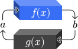
Instead of vaguely saying \(f(x)\) and \(g(x)\), we write \(f(x)\) and \(f^{-1}(x)\)!
\(f^{-1}\) is NOT an exponent; this is the notation for inverse, which is read "f inverse."
two functions \(f(x)\) and \(f^{-1}(x)\) are inverses of each other when \( f(a)=b \phantom{.}\) means \(\phantom{.} f^{-1}(b)=a\),
and vice versa, for any \(a\) and \(b\)
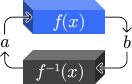
Rename the eq \(f(x)=...\) as \(y=...\) to make it easier to work with.
Replace \(f(x)\) with \(?\), or some other placeholder.
Solve the equation for \(x\).
Isolate \(x\).
Make a new equation by swapping \(x\) and \(y\) in that result.
Swap \(x\) and \(?\).
Rename the resulting \(y=...\) to \(f^{-1}(x)=...\)
Replace \(?\) with \(f^{-1}(x)\).
Check your answer. \(\checkmark\)
Find a formula for the inverse of \( f(x) = (x+11)^5-8\).
Replace \(f(x)\) with \(?\)
\( ? = (x+11)^5-8\)
Isolate \(x\)
\( ?+8 = (x+11)^5\)
\( \sqrt[5]{?+8} = x+11\)
\( \sqrt[5]{?+8}-11 = x\)
Swap \(x\) and \(?\)
\( \sqrt[5]{x + 8} - 11 = ?\)
Replace \(?\) with \(f^{-1}(x)\)
\( \sqrt[5]{x + 8} - 11 = f^{-1} (x) \)
To verify that your functions are actually inverses, you must check:
$$ (f^{-1} \circ {\color{#386ef6} f})(x) = x $$
AND
$$ ({\color{#386ef6}f}\circ f^{-1} )(x) = x $$
Check the formula for the inverse of \( f(x) = (x+11)^5-8\).
\( f^{-1} (x) = \sqrt[5]{x + 8} - 11 \)
Check \({\color{#111111}f}\circ f^{-1}\) \( = {\color{#111111}f\big( } f^{-1} (x) {\color{#111111}\big) }\)
\( = {\color{#111111} f\big(} \sqrt[5]{x + 8} - 11 {\color{#111111}\big)}\)
\( = {\color{#111111} \big(} (\sqrt[5]{x + 8} - 11) {\color{#111111}+11\big)^5-8} \)
\( =(\sqrt[5]{x + 8} {\color{#d10808} \cancel{- 11+11}})^5-8 \)
\( ={\color{#d10808} (\sqrt[5]{ \color{#386ef6} x + 8} \cancel{)^5}}-8 \)
\( =x {\color{#d10808} \cancel{+ 8-8}} \)
\(=x \phantom{-} \checkmark \)
Check \( f^{-1} \circ {\color{#111111}f}\) \( = f^{-1}\big({\color{#111111}f (x)} \big)\)
\( = f^{-1}\big( {\color{#111111}(x+11)^5-8} \big)\)
\( = \sqrt[5]{\big( {\color{#111111} (x+11)^5-8} \big) + 8} - 11 \)
\( = \sqrt[5]{(x+11)^5 {\color{#d10808}\cancel{-8 + 8}}} - 11 \)
\( = {\color{#d10808}\sqrt[5]{( {\color{#386ef6} x+11}\cancel{)^5}}} - 11 \)
\( = x {\color{#d10808}\cancel{+11 - 11}} \) \(=x \phantom{-} \checkmark \)
Find and check a formula for the inverse of \( f(x) = \dfrac{1}{x}\).
\( f^{-1} (x) = \dfrac{1}{x} \)
Check \(f\circ f^{-1}\) \(\phantom{.} \checkmark\)
Check \( f^{-1} \circ f\) \(\phantom{.} \checkmark\)
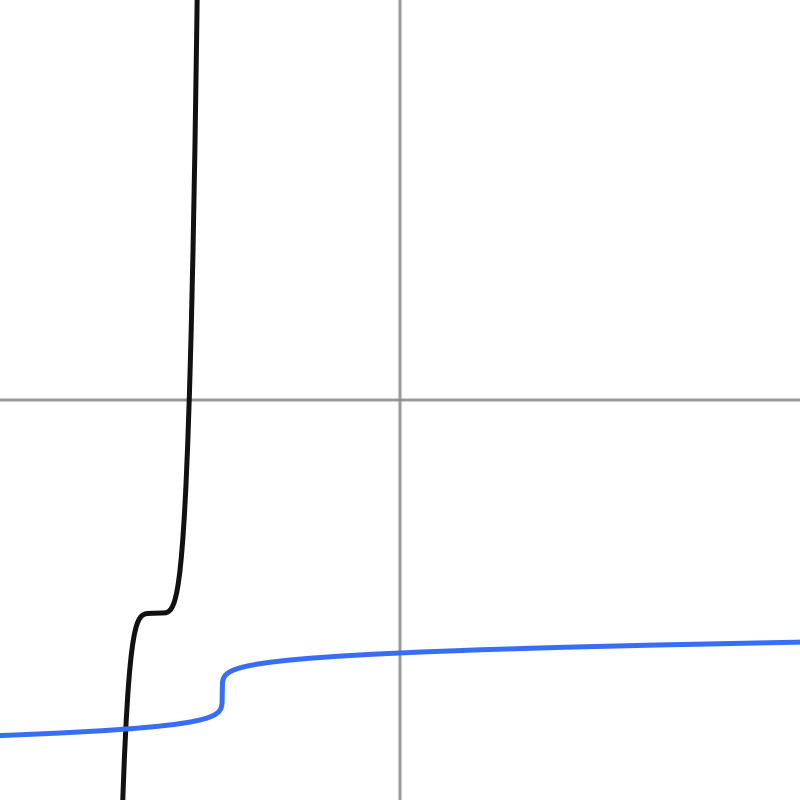
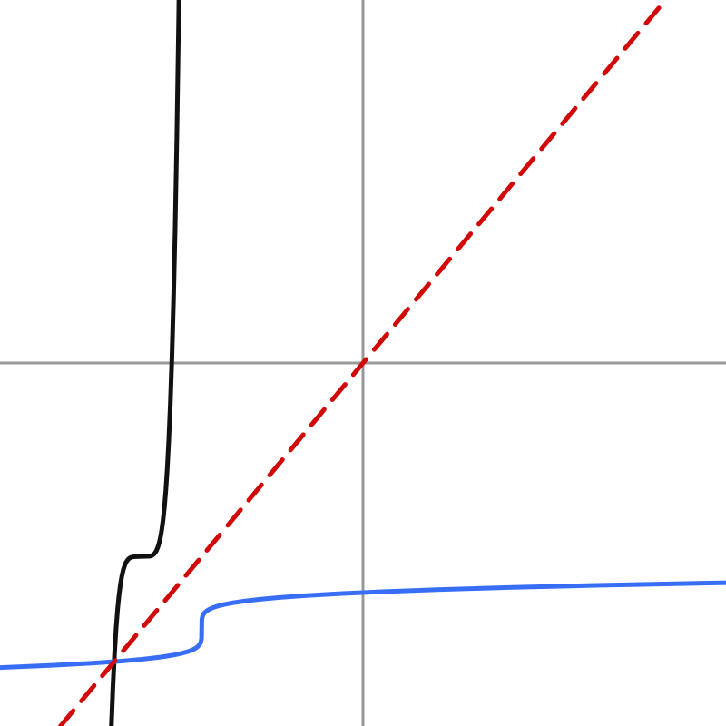
The graph of the inverse \(f^{-1}(x)\) will look like \( f(x)\) flipped across the diagonal (\(x=y\)).
This is because any point \((a,b)\) for \(f(x)\) will have a corresponding point \((b,a)\) for \(f^{-1}(x)\). Basically, we swap all of our ordered pairs; we can also think of this as swapping our axes.
ADD MORE
This is the graph for Ex. 4:
\(f(x) = \dfrac{1}{x}\)
Explain why the function is its own inverse, based on the graph.
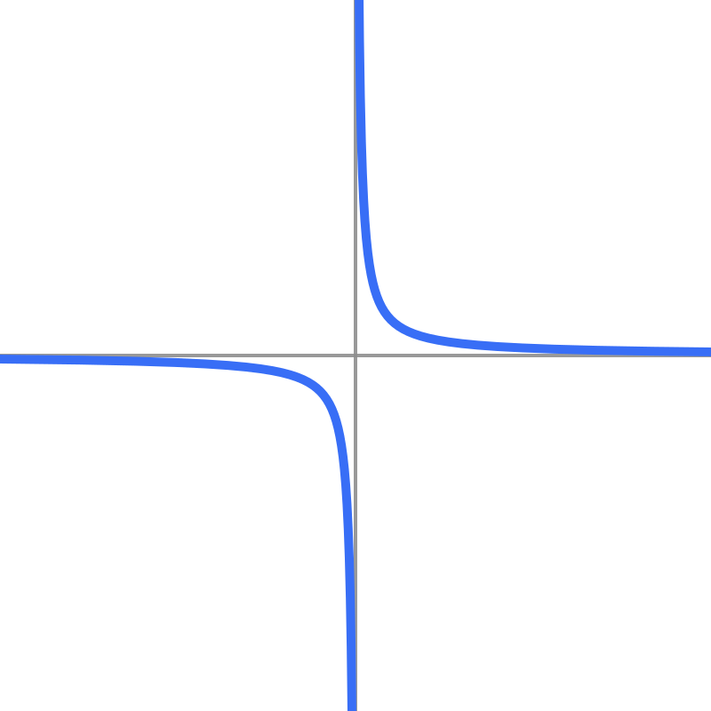
This is the graph for Ex. 4:
\(f(x) = \dfrac{1}{x}\)
Explain why the function is its own inverse, based on the graph.
It is symmetrical across the diagonal, so its inverse is itself!
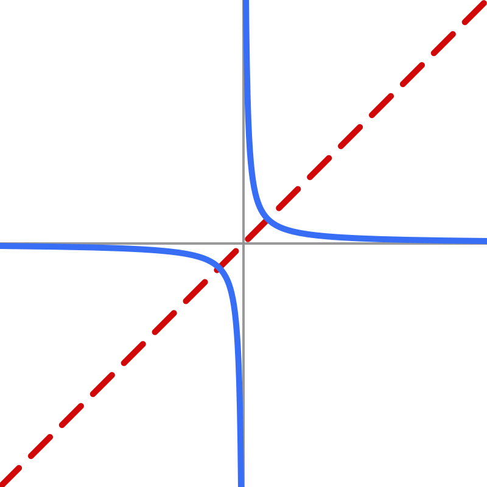
Use the graph of \(f(x)\) to evaluate \(f^{-1}(x)\).
\( f^{-1} (0) = \)
The input of \(f^{-1}\) is the output of \(f\). Where is \(0\) is the output of \(f\)?
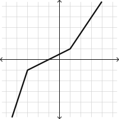
Use the graph of \(f(x)\) to evaluate \(f^{-1}(x)\).
\( f^{-1} (0) = \)
The input of \(f^{-1}\) is the output of \(f\). Where is \(0\) is the output of \(f\)?
\( f(-1)=0 \)
\( f^{-1}(0)=-1 \)
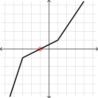
Use the graph of \(f(x)\) to evaluate \(f^{-1}(x)\).
\( f^{-1} (1) = \)
The input of \(f^{-1}\) is the output of \(f\). Where is \(1\) is the output of \(f\)?
Use the graph of \(f(x)\) to evaluate \(f^{-1}(x)\).
\( f^{-1} (1) = \)
The input of \(f^{-1}\) is the output of \(f\). Where is \(1\) is the output of \(f\)?
\( f(1)=1 \)
\( f^{-1}(1)=1 \)
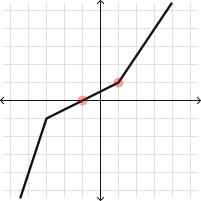
Use the graph of \(f(x)\) to evaluate \(f^{-1}(x)\).
\( f^{-1} (4) = \)
The input of \(f^{-1}\) is the output of \(f\). Where is \(4\) is the output of \(f\)?
Use the graph of \(f(x)\) to evaluate \(f^{-1}(x)\).
\( f^{-1} (4) = \)
The input of \(f^{-1}\) is the output of \(f\). Where is \(4\) is the output of \(f\)?
\( f(3)=4 \)
\( f^{-1}(4)=3 \)
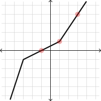
Use the graph of \(f(x)\) to evaluate \(f^{-1}(x)\).
\( f^{-1} (4) = \)
The input of \(f^{-1}\) is the output of \(f\). Where is \(4\) is the output of \(f\)?
\( f(3)=4 \)
\( f^{-1}(4)=3 \)
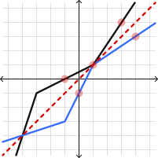
a function is one-to-one if each input makes a unique output
the horizontal line test checks whether a function is one-to-one; scan the graph with a horizontal line, and if it hits more than once, it FAILS
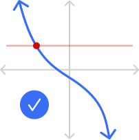
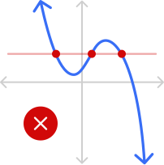
Circle the functions that are one-to-one, and draw a line through the ones that aren’t.
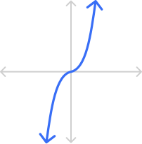
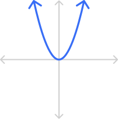
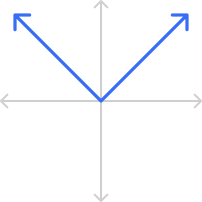
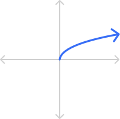
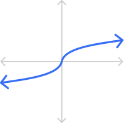
\(x^3\)
\(x^2\)
\(|x|\)
\(\sqrt{x}\)
\(\sqrt[3]{x}\)
\(\checkmark\)
Circle the functions that are one-to-one, and draw a line through the ones that aren’t.
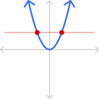
\(x^3\)
\(x^2\)
\(|x|\)
\(\sqrt{x}\)
\(\sqrt[3]{x}\)
\(\checkmark\)
:(
Circle the functions that are one-to-one, and draw a line through the ones that aren’t.
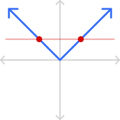
\(x^3\)
\(x^2\)
\(|x|\)
\(\sqrt{x}\)
\(\sqrt[3]{x}\)
\(\checkmark\)
:(
:(
\(\checkmark\)
\(\checkmark\)
-> 3.6 homework